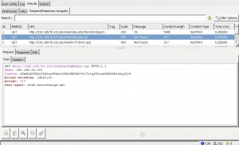
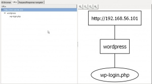

W3AF framework
Goran Štrok, Dražen Bandić, Davorin Vukelić
Sadržaj |
Općenito o projektu
{kind=link}
W3af (Web Application Attack and Audit Framework) je skup alata za analizu napada te reviziju Web aplikacija. Postoje dva različita sučelja za korištenje:CUI(konzola) i GUI (grafičko sučelje). Ovo okruženje omogućuje korisniku da kroz jednostavno grafičko sučelje identificira i iskoristi ranjivosti ciljane Web aplikacije, pa čak i Web poslužitelja na kojem je postavljena ciljana Web aplikacija. Standardni slučaj korištenja uključuje odabir postojećeg profila ili izradu vlastitog uz odabir pojedinačnih testova iz neke od 6 kategorija pluginova. U nastavku će biti opisane ove kategorije i neki od testova koje one sadrže.
Arhitektura
W3af se sastoji od dva dijela core i plugin. Core upravlja i koordinira procesima koji su pokrenuti od strane pluginova. Pluginovi pokušavaju otkriti slabosti web stranice tako da međusobno razmjenjuju podatke. Ono što neki od pluginova uspije dohvatiti prosljeđuje u bazu koja je vidljiva ostalim pluginovima te prikupljene informacije može koristiti za druge napade. Cod je pisan u Pythonu ali ga je moguće napraviti plugin i u drugim programskim jezicima.
{kind=link}
Povijest
Projekt je 2007 godine pokrenuo Andres Riancho. Projekt w3af je razvijala zajednica vođena Andres Riancho sve dok razvoj projekta nije preuzela tvrtka Rapid7 u 2010. Rapid7 je počela sponzorirati projekt kako bi ubrzala njegov napredak. Rapid7 je tvrtka koja se bavi upravljanjem rizika i penetracijskim testiranjima čiji je stožer u Bostonu.
Pluginovi
Revizija (Audit)
Testovi revizije koriste znanje otkriveno kroz testove otkrivanja(Discovery) kako bi pronašli ranjivosti Web aplikacija i Web servera. Neki od mogućih testova su:
blindSqli - Blind SQL injection - koristi se kada je Web aplikacija ranjiva na SQL injection napad ali rezultati njekcije nisu vidljivi za napadača. Ranjiva stranica neće direktno prikazati pogrešku ali će se ponašati drugačije ovisno o rezultatu logičkog izraza ubačenog u validan SQL zahtjev. Npr. ako u dva različita zahtjeva ubacimo izraze 1'='1' i '1'='2 možemo očekivati promjenu u ponašanju ukoliko postoji ranjivost.
fileUpload - test pokušava iskoristiti ranjivosti nezaštičenih formi za prijenost datoteka. Web aplikacije uglavnom provjeravaju ekstenziju datoteke koja se šalje ali neke provjeravaju i sadržaj. Ideja je da se malicionzni kod ubaci unutar sekcije komentara i na taj način izbjegne provjera. Ukoliko se datoteka uspješno prenese na poslužitelj test je uspio.
htaccessMethods - test traži ranjivosti uzrokovane pogreškama u konfiguraciji .htaccess datoteke.
localFileInclude - specifično za UNIX sustave. Test pokušava poslati naredbu tipa ../../../../../etc/passwd kako bi dohvatio datoteku koja sadrži korisničke lozinke.
unSSL - test provjerava jednakosti HTTP i HTTPS URL-a te identificira ranjivosti.
xsrf - Cross-site request forgery - koristi povjerenje određene Web aplikacije u korisnikov pretraživač. Napad se najčešće izvodi postavljanjem malicioznog URL-a unutar slike. Korisnik otvranjem slike pokreće zahtjev u svoje ime te ga samim time Web aplikacija ovjerava.
xss - Cross-site scripting - ova ranjivost omogućuje ubacivanje malicioznog koda direktno u kodnu stranicu Web aplikacije. Najčešći oblik je putem alata za pretraživanje. Izraz koji se pretražuje će najčešće ponovo biti prikazan na stranici sa rezultatima, te ukoliko izraz izraz ne validira, napadaču se otvara mogućnost da na to mjesto ubaci svoj maliciozni kod.
xst - Cross Site Tracing - Plugin radi tako da pozove HTTP TRACE metodu.Ukoliko on uspije znači da je stranica ranjiva na XST napad. Trace metoda zahtijeva da joj vrati zahtjev koji je poslan. Sa XST ranjivosti možemo prikupiti sve spremljene podatke na stranici (kolačiće) uključujući i one koje koriste SSL.
LDAPi- šalje posebno izrađen string svakom parametru i analizira vračenu LDAP grešku. LDAP injection napad je za aplikacije koje se temelje na Lightweight Directory Access Protocol. LDAP je skup svih korisnika, aplikacija razvrstanih po IP-u mreži.
generic - pronalazi sve greške te one greške koje se ne nalaze u bazi poznatih grešaka vrača radi analize. Nova metoda koja omogućuje da analiziramo greške koje nisu uobičajene. Prvo pošalje zahtjev te ga spremi. Zatim šalje vrijednosti koje ne smiju biti. Ako parametar zahtjeva vrijednost dužine jedan, on će poslati naizmjence odabranu vrijednost duljine 8. Zatim šalje zahtjeve sad dva stringa svakom parametru. Jedan je "d'kc"z'gj'"**5*(((;-*`)" dok je drugi prazan string te tako pokušava dobiti greške.
xpath - pronalazi xpath injection tako da pošalje "d'z'0" string u sve moguće inpute te analizira vraćene xpath greške. xpath injection se koristi za web stranice koje imaju spremljene podatke u xml-u.
osCommanding - napad pregledava da li postoje slabosti na naredbe u operacijskom sustavu. Ima dvije tehnike napada: vrijeme odziva i ispisivanje direktorija. Vrijeme odziva pinga server i ukoliko odgovori u određenom roku napad je moguć. Druga tehnika je da pokuša iza ip adrese umetnuti ";" i/ili "`" te os naredbu sa koja vraća trenutni direktorij. Naredba je zavisna od programskog jezika.
dav- pretražuje greške u WebDAV konfiguraciji servera. Ukoliko je pogrešno podešen WebDAV. WebDAV (Web Distributed Authoring and Versioning) je proširenje HTTP protokola koje omogućuje korisniku olakšano upravljanje datotekama na WWW server. Plugin će pokušavati postaviti datoteku na server, ukoliko uspije onda je pronašao grešku.
buffOverflow - pronalazi ranjivost da mu se buffer prenapuni. Napad je moguć ako je definirano da server vraća greške i ako je stranica napravljena u programsko jeziku koji omogučuje upravljanje memorijom.
BruteForce
basicAuthBrute i formAuthBrute - testovi dohvaćaju predefinirane kombinacije korisničkih imena i lozinki te pokušvaju identificirati valjane kombinacije. Testovi također koriste i podatke dohvaćene na stranici za profiliranje mogućih kombinacija.
Otkrivanje (Discovery)
Ovi testovi pronalaze valjane URL-ove, korisnike, podatke o poslužitelju i još puno toga. Discovery pluginovi su povezani te jedan drugome u petlji šalju podatke koje su sakupili sve dok niti jedan više ne može pronaći ranjivost.
{kind=link}
Neki od mogučih testova:
allowedMethods - test pronalazi HTTP metode dozvoljene na poslužitelju.
domain_dot - pronalazi ranjivosti u tzv. dot domeni koje se pojavljuju kod pogrešno konfiguriranih virtualnih hostova. Slanjem zahtjeva na napadač http:\\host.com. umjesto na http:\\host.com dobiva pristup svim datotekama iz dot domene.
dotNetErrors - test pokušava izvuči podatke iz dotNet stranica pogreške. Tipični URL.ovi koji generiraju grešku: default|.aspx, default~.aspx.
favicon_identification - test pokušava izvuči podatke o korištenom software-u iz favicon-a. MD5 sažetak se uspoređuje sa kolekcijom sažetaka iz baze podataka.
findBackdoor - pronalazi web ulaze na stražnja vrata (backdoor) i web ljuske (shel).
fingerGoogle - za zadanu domenu traži email asdrese na Google-u.
googleSpider - identificira nove URL-ove zadane domene pretražujući Google pomoću identifikatora "site:".
phpEggs - pomoću dokumentiranih uskršnjih jaja (easter eggs) koji postoje u PHP-u pronalazi verziju PHP-a. Na način da "?=PHPE9568F36-D428-11d2-A769-00AA001ACF42" stavi na kraj URL-a te se prikažu smiješne slike.
phpInfo - traži PHP Info datoteku, i ako ju nađe ona će joj dati verziju PHP-a.
robotsReader - pretražuje robots.txt datoteku kako bi saznao više o samoj stranici. Na ovaj način moguće je identificirati neke URL-ove koji možda nisu dostupni putem Google pretraživanja.
web spider- napravi zahtjev na URL i predoći sve linkove i forme dobivene u zahtjevu.
userDir - pokušava identificirati korisničke direktorije u sustavu. Također pokušava identificirati i operativni sustav.
wordpress_fingerprint - identificira verziju wordpressa, ukoliko je instaliran.
finger MSN - pretražuje sve emailove u MSN tražilici sa '@domain.com' koju pretražujemo.
metaTags - pretražuje meta podatke kao što su: linux, windows, visual.
hashFind - pretražuje da li postoje haširani podaci u HTTP odgovoru.
httpAuthDetect- pretražuje svaku stranicu i odgovor koji indicira da postoji zahtjev za indentifikacijom.
httpInBody - pretražuje da li postoji HTTP zahtjev ili odgovor u tijelu odgovora. Najčešće se pojavlju kada developer postavi za debagiranje HTTP zahtjeva te ga ispisuje kao komentar.
serverStatus- hvata server status od Apache-a i parsa ga. S time pronađe nove URL-ove ili čak u nekim slučajevima i druge domene koje se nalaze na srveru.
sitemapReader - analizira sitemap.xml datoteku i pronalazi nove URL-ove.
Zaobilaženje (Evasion)
Ovaj set testova prilagođava zahtjeve sa ciljem zaobilaženja sutava zaštite (IPS).
modsecurity - koristi propust za mod_security verzije <2.1.0 prilikom slanja POST zahtjeva. Ukoliko se na početak zahtjeva postavi ASCIIZ byte, mod_security ga prepoznaje kao kraj zahtjeva te propušta sve što dolazi nakon toga.
reversedSlashes - zamjenjuje / sa \. Primjer: /foo/bar.asp -> \foo\bar.asp
rndParam - dodaje nasumične parametre na URL-ove. Primjer: /foo/bar.asp -> /foo/bar.asp?ndkjads=3232jk
rndPath - dodaje nausmične putanje na URL-ove. Primjer : /foo/bar.asp -> /dnsajkda/../foo/bar.asp
Grep
Ovi testovi analiziraju svaki zahtjev s ciljem pronalaženja pogrešaka, cookie-a, email-ova, komentara itd.
ajax - pretražuje stranice s ciljem pronalaska Ajax koda.
blankBody - pretražuje HTTP odgovore sa praznim tijelom. Ovakvi odgovori mogu sugerirati pogreške u kodu ili konfiguraciji poslužitelja ili apilikacije.
collectCookies - pretražuje svaki odgovor (response) za kolačiće za sesiju (session cookies) poslanih od web aplikacije.
creditCards - kao što i ime sugerira, ovaj test na stranicama pretražuje uzorke koji bi mogli biti brojevi kreditnih kartica. Okolina čak nudi i URL za provjeru valjanosti ovog testa.
getMails - pretražuje stranice u potrazi za email adresama. Ovi podaci se kasnije koriste za bruteForce testove.
httpAuthDetect - pronalazi odgovore koji sugeriraju da ciljani resurs traži autentifikaciju.
metaTags - pronalazi zanimljive meta oznake, npr. 'microsoft','visual','linux'.
user_defined_regex - omogućuje korisniku da definira regularni izraz ili niz regulartnih izraza po kojima će se vršiti pretraživanje. Test za svaki pronalazak vraća odgovor.
error500 - hvata sve greške 500 koji nisu uhvatili ostali pluginovi. Error 500 oznaka za grešku na serveru (Internal Server Error)
oracle - uzima sve Oracle poruke koje nađe.
feeds - pretražuje svaki rss, feed ili atom na stranici. Korisna informacija za testiranje feed injectin-a. lang - pretražuje stranice te vrača na kojem je jeziku stranica pisana. To se učini tako da se spreme ključne riječi jezika. Spremljene riječi se uspoređuju sa riječima na stranici.
Izmjena zahtjeva (Mangle)
Sadrži samo jedan test:
SED - stream editor for web requests and responses - omogućuje korisniku da modificira zahtjeve i odgovore. Naredbe se zadaju preko regularnih izraza.
Primjer:
qh/User/NotUser/
Znači da treba pretražiti zaglavlje zahtjeva (re[q]uest [h]eader) za izrazom "User" i zamjeniti ga sa "NotUser".
Ispis (Output)
Ovo je zasebna kategorija koja omogućuje korisniku odabir načina ispisa izvještaja: console, emailReport, gtkOutput, htmlFile, textFile, xmlFile.
--Gstrok 13:50, 17. siječnja 2013. (CET) --Dvukelic 15:37, 17. siječnja 2013. (CET)
Console UI
Console UI na w3af frameworku je vrlo dobro izrađen i lako ga je koristiti. Pa tko nije ljubitelj grafičkog sučelja, može se poslužiti sljedećim "tutorialom" za konzolni rad s w3af na UNIX operacijskim sustavima.
Idemo redom, kako bi pokrenuli w3af u konzoli potrebno je pokrenuti sljedeću naredbu u terminal (važno je nalaziti se u direktoriju di se nalazi w3af)
./w3af_console
Verzija w3af koji se koristi u ovom primjeru je 1.0-stable-4286. Pomoću naredbe version.
{kind=link}
Nakon ulaska u w3af sa naredbom help prikazati će nam se sve opcije koje možemo koristiti u ovom frameworku.
{kind=link}
Kao što se vidi iz gore prikazane slike, naredbe/opcije su podijeljene u četiri skupine.
U prvoj skupini spadaju naredbe/opcije koje omogućuju postavljanje načina na koji će se izvršiti analiza, odabir testova koji će se koristiti u analizi, eksploatiranje ranjivosti, odabir raznih već spremljenih profila i samo pokretanje analize.
U drugoj skupini se nalaze naredbe koje pomažu pri konfiguraciji odredišta ili frameworka nad kojim će se vršiti analiza.
U treću skupinu spadaju naredbe za izlazak iz programa, te za vraćanje na prethodni izbornik.
U četvrtoj skupini su naredbe koje daju informacije o samo alatu/frameworku.
Naredbama plugins i help, prikazati će nam se sve mogućnosti u izborniku plugins.
{kind=link}
Gdje su nam najvažnije opcije iz treće skupine, gdje vidimo svih sedam raspoloživih pluginova u w3af frameworku. Biti će prikazani samo oni najčešće korišteni pluginovi u testiranjima i analizama. Ovo će ujedno biti i postavke za jedan od testova koji će se izvršiti. Kao što će biti vidljivo iz nekoliko sljedećih slika, dodavanje testova se vrši tako da se napiše [ime plugina] [ime testa] koji se želi izvršiti (npr. audit xsrf). Najprije ćemo pogledati kako izgleda audit plugin.
{kind=link}
Na gore prikazanoj slici su izlistani svi testovi u audit opcijama. I kod ovog testiranja ćemo koristiti sve testove koje audit nudi, kao što je i prikazano na slici (audit all).
Najviše ima discovery testova, i neće se koristiti svi testovi, nego samo određeni. Testovi koji su korišteni u analizi su prikazani na sljedećoj slici. Možete uočiti da se u drugom stupcu odmah pored imena testa ispisati Enabled (omogućeno), što znači da će se on koristiti u analizi. To je naravno vidljivo tek nakon što se odaberu testovi koji se žele uključiti, te ponovo pozove plugin (u ovom slučaju discovery).
{kind=link}
U analizi su još korišteni i grep testovi. Sljedeća slika prikazuje sve grep testove i one koji su korišteni u ovoj analizi.
{kind=link}
To su svi testovi koji su korišteni u ovom testiranju, jer će oni dati one informacije koje su nama potrebne. A to su koje su ranjivosti web aplikacija koji će se koristiti u analizi. O ostalim pluginovima i njihovim testovima možete pročitati na istoj ovoj wiki stranici, ali pod naslovom Pluginovi.
Umjesto da ste sami dodavali testove koji će biti korišteni u analizi, mogli ste izabrati jedan od ponuđenih profila koji dolaze sa w3af. Lista profila je prikazana na sljedećoj slici, a moguće je doći do nje odabirom opcije profiles iz glavnog izbornika. A naredba s kojom izabirete profil je use [ime profila] (npr. use fast_scan).
{kind=link}
Sljedeća opcija koja je vrlo korisna je output. Pomoću nje određujemo na koji način će nam w3af vratiti rezultate analize. Kao što će se vidjeti na sljedećoj slici, postoji nekoliko vrsta "output-a", a u testiranju su se koristili ispis na konzoli (console) i ispis u html datoteku (htmlFile).
{kind=link}
Nakon što imate izrađen profil (neovisno jeste li ga sami napravili ili iskoristili već gotovi) slijedi odabir odredišne destinacije, tj. morate navesti web aplikaciju ili framework nad kojim želite vršiti analizu. U testiranju će se koristiti opcija target, i to na određenu adresu. Odabir web aplikacije koja će se koristiti u analizi može se raditi i na početku, ali bilo je slučajeva u kojima je znalo dođi do određenih grešaka, pa je bolje da se ovo napravi na kraju prije samog pokretanja analize. Čisto prevencije radi. ;)
{kind=link}
Osim target opcije postoje i dvije ostale opcije http-settings i misc-settings koje se koriste za postavljanje parametara koje koristi framework. Sve parametri su zadani na početku, i u većini slučajeva se ne trebaju mijenjati. W3af je dizajniran tako da početnicima omogući lako rukovanje, ali i da ostavi stručnjacima dosta mjesta za mijenjanje ovisno o potrebama. Prikazati ćemo primjer http-settings opcije i koje ona sve parametre sadrži.
{kind=link}
Sad slijedi samo pokretanje analize, naravno sa naredbom start.
{kind=link}
--Dražen.Bandić 13:41, 19. siječnja 2013. (CET)
Testovi
Za potrebe testiranja korištena je distribucija OWASP Broken Web Apps preuzeta sa Moodle stranica kolegija Sigrurnost informacijskih sustava. Ova distribucija sastoji se od web poslužitelja na kojemu su instalirani razni primjeri ranjivih web aplikacija. W3af framework testiran je na nekoliko aplikacija iz navedene distribucije.
GUI
OrangeHRM
{kind=link}
OrangeHRM je sustav za upravljanje ljudskim resursima(eng. Human Resource Management). Verzija nad kojim je provedeno ispitivanje je 2.4.2 sa poznatim ranjivostima na XSS i SQL Injection. Testiranje je provedeno kroz W3af GUI sa slijedećim postavkama:
Audit - svi parametri
Discovery - allowedMethods, findBackdoor, phpEggs, phpInfo, robotsReader, sitemapReader
Grep - ajax, collectCookies
Output - gtkOutput, htmlFile
Test je trajao 1 minutu i 50 sekundi. Pronađena je ranjivost na XST(Cross Site Tracing) te je uspješno identificirana verzija poslužitelja Apache/2.2.14 (Ubuntu).
Detaljan izvještaj u obliku html datoteke.
--Gstrok 13:51, 17. siječnja 2013. (CET)
Gallery2
{kind=link}
Gallery2 je sustav za objavljivanje albuma i slika. Testirana je verzija 2.1 sa slijedećim postavkama:
Audit - svi parametri
Discovery - allowedMethods, findBackdoor, phpEggs, phpInfo, robotsReader, sitemapReader
Grep - ajax, collectCookies
Output - gtkOutput, htmlFile
Test je trajao 13 minuta i 19 sekundi. Pronađen je veći broj mogućih eval() injection ranjivosti zbog nedovoljno dobre validacije korisnikovog unosa. Također je pronađena ranjivost na XST(Cross Site Tracing) te dvije nepoznate ranjivosti.
Detaljan izvještaj u obliku html datoteke.
--Gstrok 13:52, 17. siječnja 2013. (CET)
WebCalendar
{kind=link}
WebCalendar je aplikacija za ažururanje događanja ili bitnijih datuma. Može se koristiti kao kalendar za pojedinačne korisnike, više korisnika ili kao aplikacija za najavu događanja. Testirana je verzija 1.0.3 sa slijedećim postavkama:
Audit - svi parametri
Discovery - allowedMethods, findBackdoor, phpEggs, phpInfo, robotsReader, sitemapReader
Grep - ajax, collectCookies
Output - gtkOutput, htmlFile
Test je trajao 2 minute i 26 sekundi. Pronađeno je nekoliko XSRF i XST ranjivosti te jedna nepoznata ranjivost.
Detaljan izvještaj u obliku html datoteke.
--Gstrok 13:52, 17. siječnja 2013. (CET)
Joomla
Joomla je CMS sustav ta izradu web stranica. Baziran je na PHP programskom jeziku. Pohranjuje podatke u MySql bazu podataka. Testiranje je provedeno kroz W3af GUI sa slijedećim postavkama:
Audit - svi parametri
Discovery - allowedMethods, findBackdoor, phpEggs, phpInfo, robotsReader, sitemapReader
Grep - ajax, collectCookies
Output - gtkOutput, htmlFile
Ciljani URL: http://192.168.56.101/joomla/
Info: prikupljen Cookie sa zahtjevom
Ranjivosti: XST
XSRF
Trajanje: 1 min
Detaljan izvještaj u obliku html datoteke.
Ciljani URL: http://192.168.56.101/joomla/index.php?option=com_user&view=login&Itemid=2
{kind=link}
Trajanje 17 minuta i 25 sec
Ranjivosti:
XST
XSRF
generic(nedefinirane ranjivosti)
Detaljan izvještaj u obliku html datoteke.
Pronađena je ranjivost (generic) koju w3af definira kao nepoznatu. O ćemu se zapravo radi?
REQUEST:
GET http://192.168.56.101/joomla/index.php?Itemid=2&option=com_user&view= HTTP/1.1
Host: 192.168.56.101
Cookie: path=/; d5a4bd280a324d2ac98eb2c0fe58b9e0=0i7otqj9tnun5k0k6b3ssqjfj4;
Accept-encoding: identity
Accept: */*
RESPONSE:
HTTP/1.1 200 OK
Content-Length: 3970
X-Powered-By: PHP/5.3.2-1ubuntu4.5
Expires: Mon, 1 Jan 2001 00:00:00 GMT
Vary: Accept-Encoding
Server: Apache/2.2.14 (Ubuntu) mod_mono/2.4.3 PHP/5.3.2-1ubuntu4.5 with Suhosin-Patch mod_python/3.3.1 Python/2.6.5 mod_perl/2.0.4 Perl/v5.10.1
Last-Modified: Mon, 14 Jan 2013 10:12:10 GMT
Pragma: no-cache
Cache-Control: no-store, no-cache, must-revalidate, post-check=0, pre-check=0
Date: Mon, 14 Jan 2013 10:12:08 GMT
P3P: CP="NOI ADM DEV PSAi COM NAV OUR OTRo STP IND DEM"
{kind=link}
Dobiveno objašnjenje: An unidentified vulnerability was found at: "http://192.168.56.101/joomla/index.php", using HTTP method GET. The sent data was: "Itemid=2&option=com_user&view=". The modified parameter was "view". This vulnerability was found in the request with id 150.
Što znaći da nakon "Itemid=2" iz URL-koji se pretrazuje nadodamo "&option=com_user&view=" dobijemo da se korisnik uspjesno ulogirao. Što nas dovidi do ranjivosti definirane kao: "Broken authentication and session management"
Mogućnosti
Opcija 'Send Request to Manual Editor' omogučava da zahtjev koji je poslan možemo uređivati te ga ponovno poslati, da bih vidjeli učinka prilikom promjene sadržaja.
{kind=link}
Opcija 'Send Request to Fuzzy Editor' nam omogučava da zahtjev koji je poslan uređivamo te ga odmah i analiziramo.
{kind=link}
U Results pod URL's tabom možemo vidjeti kako je definirana struktura stranice ili samo njen odeređeni dio.
{kind=link}
U Results pod Results Request Response Navigator tabom možemo pretraživati sve zahtjeve koji su odaslani te ih editirati
--
--Dvukelic 16:23, 17. siječnja 2013. (CET)
{kind=link}
WordPress
Stranica izrađena u CMS-u WordPress.
Ciljani URL:
http://192.168.56.101/wordpress/wp-login.php
Audit - svi parametri
Discovery - allowedMethods,robotsReader, sitemapReader
Grep - ajax, collectCookies
Output - gtkOutput, htmlFile,console
{kind=link}
Ranjivosti:
XST
Test je trajao 3 min i 33 sekunde
Detaljan izvještaj u obliku html datoteke.
Izgled strukture WordPress stranice:

{kind=link}
--Dvukelic 15:38, 17. siječnja 2013. (CET)
CUI
Yazd
{kind=link}
Yazd je web baziran forum za diskusije. Implementiran je u Javi, i mora biti uspotavljen na nekom aplikacijskom serveru. Ujedno je i open source projekt, pod licencom od Apache-a.
Audit - svi parametri
Discovery - allowedMethods, findBackdoor, robotsReader, sitemapReader, phpEggs, phpinfo, oracleDiscovery
Grep - ajax, collectCookies
Output - console, htmlFile
Test je trajao 29 sekundi. Pronađena je ranjivost na XSRF (Cross Site Request Forgery) te je uspješno identificirana verzija poslužitelja "Apache-Coyote/1.1".
Detaljan izvještaj u obliku html datoteke.
--Dražen.Bandić 13:40, 19. siječnja 2013. (CET)
GTD-PHP
{kind=link}
GTD-PHP je web bazirana implementacija "Getting Things Done" osobnog organizacijskog sustava. Verzija nad kojom je provedena analiza je gtd-php version 0.7.
Audit - svi parametri
Discovery - allowedMethods, findBackdoor, robotsReader, sitemapReader, phpEggs, phpinfo, oracleDiscovery
Grep - ajax, collectCookies
Output - console, htmlFile
Test je trajao 57 sekundi. Pronađena je ranjivost na XSRF (Cross Site Request Forgery) te je uspješno identificirana verzija poslužitelja "Apache-Coyote/1.1".
Detaljan izvještaj u obliku html datoteke.
--Dražen.Bandić 13:40, 19. siječnja 2013. (CET)
Literatura
w3af: http://w3af.sourceforge.net
OWASP: https://www.owasp.org/index.php/Main_Page
Andrés Riancho,A framework to 0wn the Web,2009 URL:http://www.sector.ca/presentations09/w3af%20in%20150%20minutes%20-%20part%201.pdf